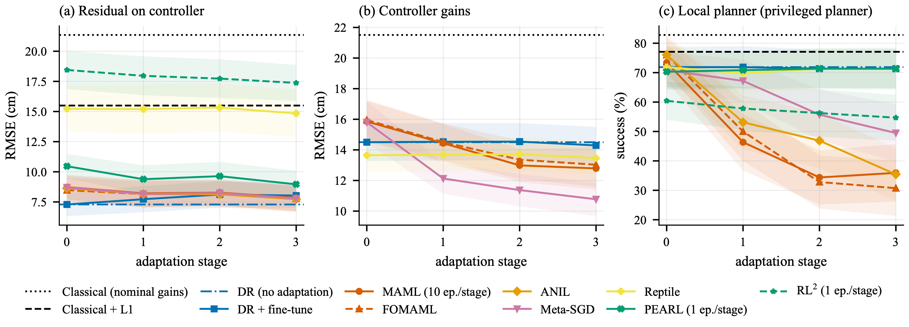

A simulation study of seven algorithms with classical control and planning
A quadrotor that sees with a depth camera, maps a room it has never been in, plans a route with A*, and flies it under payload, wind and motor wear. We plug seven meta-learning algorithms into three places of this classical stack and ask where adapting actually helps.
Every frame below is replayed from the simulator, not drawn by hand. The drone starts with an empty map. The dark cells are what it has mapped from its own depth camera so far. Turn on ground truth to see the obstacles it hasn't found yet.
Ray-cast D435i model with range-squared noise and dropouts
Log-odds voxels, free space carved along each ray
26-connected A* on the inflated map, replanned at 2 Hz
Meta-RL policy turns depth and carrot into velocity
Geometric controller with meta-tuned gains or a meta-learned residual
Thrust + body rates, as PX4 offboard accepts
Fixed gains tuned for the nominal drone sag and lag once the drone carries extra mass, flies into wind and loses 20% of one motor. The classical L1 adaptive controller estimates that lumped disturbance and cancels it.
The meta-learning study asks whether a policy trained to adapt can beat L1 from a few seconds of flight data, and whether it holds up outside the training range.
Every method adapts to new dynamics: payload ×0.85–1.3, one motor down to 75%, drag ×0.5–2, wind up to 2.5 m/s with gusts, and 0–30 ms latency. Scores are on 32 held-out tasks for tracking and 24 for navigation, each navigation episode in its own room never seen in training, plus out-of-distribution tasks beyond every range. Gradient methods adapt with up to 3 updates of 10 episodes each; PEARL and RL² with up to 3 episodes of experience. Training seeds: 2 for the residual, 5 for gains, 2 for navigation. The full navigation stack is scored on 48 unseen rooms per seed.

About $1,600–2,000 in parts. PX4 takes collective thrust and body rates from the companion computer in offboard mode, which is the policy's own action space. The D435i is the camera the simulator models. The X500 is PX4's reference airframe, so the simulator's mass, arm and inertia come from a published model.
Runner-up: Crazyflie 2.1 Brushless, the safest choice for checking that control transfers, but it can't carry a depth camera. The ModalAI Starling 2 would fit best, but it appears to be unavailable new.
Weigh it, measure inertia on a pendulum, test thrust and motor lag on a thrust stand, then update the simulator.
Motion-capture state, policy in the loop, ±10 cm for 60 s.
Figure-eights with known added payloads, compared against the simulator.
Foam pillars, live depth mapping, A* and the local planner.
Onboard VIO only. Success rate, clearance, time to goal.
@misc{mehta2026metaquadrotor,
title = {Where Does Meta-Learning Help a Quadrotor? A Simulation Study of
Seven Algorithms with Classical Control and Planning},
author = {Mehta, Amal},
year = {2026},
note = {Preprint},
url = {https://github.com/amalmehta/DroneAutonomy}
}